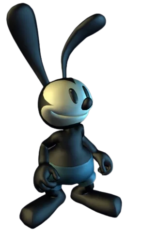
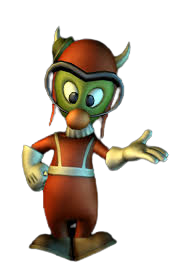
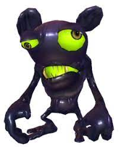
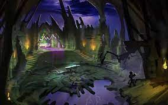
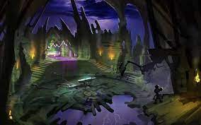

Graficos
Unos de los puntos mas destacados del juego es su apartado artistico, el
juego fue animado por Pixar y se puede notar en cada detalle del juego,
desde las expresiones de los personajes y enemigos hasta la fluidez del mundo,
ademas de todos los efectos especiales y sombreados que presentan cada uno.
Aqui unos ejemplos:
Personajes
Oswald
Este es el modelo de Oswald, uno de los personajes del juego, y tal vez el mejor cuidado, debido a que es el personaje que cuenta con más animaciones en todo el juego, esto se debe a que en el concepto inicial del juego, se penso a Oswald como un personaje jugable, pero esta idea quedo desechada y reutilizada para su secuela.
Gus
Este modelo pertenece al personaje Gus, y un dato curioso es que su modelo es reciclado varias veces durante el juego, esto se debe a que en el juego existen personajes llamados "los grenlim", y su diseño es practicamente identico en cada uno, menos excepciones.
Spatter
Este es el modelo de algunos de los enemigos en el juego,llamado Spatter (Salpicadura en español), se puede notar detalle en los efectos de tinta que rellenan su cuerpo. Tiene varias animaciones, desde caminar, atacar o ser golpeados todas estas muy pulidas y detalladas.
Zonas del juego
Cada zona esta ambientada de forma diferente, segun en que sitio de "El paramo" estes,
aqui algunos ejemplos de las tematicas en cada zona:
Parque de atracciones
Esta es una de las zonas mejor tematizadas del juego, se trata de un parque de atracciones
donde todos los enemigos van vestidos de carnabal y te tienes que desplazar por todas las atracciones.
Mickeybasura
Otra zona muy bien tematizada es "Mickeybasura" que usa como objetos del escenario
productos antiguos de Mickey mouse que hoy dia no existen, usando estos para escalar la montaña.
Castillo bella oscura
.jpg) 

El "Castillo bella oscura" es considerada la mejor zona de todo el juego, se vasa en el castillo
de Disney, pero tiene un aspecto mas demacrado y roto, con varias zonas llenas de pinturas que cuentan
un poco de la historia de Oswald y de "El paramo".